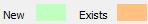
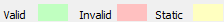

Once a Template has been created for an object, then you can create any number of Instances of this object, which simply allows you to name it and then specify the process values that uniquely configure it, using the predefined value substitutions.
Then you can choose whether you want to deploy it fully or partially immediately or to deploy it at a later time.
(missing or bad snippet)Display the Create New Instance configuration dialog for the required object instance:
 From the Object Model datasource in the Enterprise Manager:
From the Object Model datasource in the Enterprise Manager:
By default the New instance name is the name of the template, prefaced by "INST_" instead of "TPL_", which you can edit as needed. Typically you will need to edit this name to provide the unique, detailed name for this object.
To ensure that the specified Template is the template that you want to create an instance of, hover the mouse over this template  and any child templates that have been specified in the Template hierarchy tree, which displays a preview of what each template looks like.
and any child templates that have been specified in the Template hierarchy tree, which displays a preview of what each template looks like.
Note: Only the parent template has the specified instance name, whereas any child templates retain their template names.
The Attributes for: table displays any attributes specified by the selected template along with their default values that you can change as needed, such as its power rating. Furthermore you can also add additional instance-specific attributes (in other words attributes that only apply or further describe this instance).
(missing or bad snippet)Tip: Typing in the first letter of an existing attribute immediately inserts the full text of this attribute name.
(missing or bad snippet)Note: You can only delete the additional instance-specific attributes that you add.
Click Next, once you are happy with this instance name and its specified attributes.
Click Cancel, if you selected the incorrect template.
In this step you need to specify and configure the agents that each template referenced by this object instance requires.
Firstly, this page displays a table containing a separate group of agents required for each template that this object references. These group names use dot notation to represent the template names specified in the Template hierarchy tree of the previous page.
Clicking a group, displays more details concerning this template in the Instance tab of the Configuration pane below this table.
Note: The Datasource property indicates the name of the Adroit datasource (Agent Server) that is used to validate, create and configure these agents.
Any template containing a substitution is prefixed with the icon that indicates that values need to be inserted for these substitutions.
Note: You cannot leave this page until every icon has been removed by providing the required substitution values.
If necessary, click the required group heading to expand it (or click the Expand All button to expand all the groups at once).
Then click either the Substitution Names or Substitution Values cell in the row where a icon is displayed to open the Substitution Values dialog, in which you need to type in the required Value for each substitution.
Use the <- and -> buttons to quickly navigate to the previous or next substituted value.
Note: Multiple substitutions and their values are separated by commas in their cells.
Tip: Use the Name cell to determine the eventual format of the entire substituted name.
The background color of the Name cell indicates whether the resultant agent name already exists or is new, as follows:

Typically you will specify new tags that does not already exist. However, you can also specify an existing tag, which you need to reuse, such as an AlarmManagement agent.
Once an agent name has been specified, then use the Configuration pane below this table, to configure its available Slots, Scanning, Logging and/or Alarming as predefined by the template/s, by clicking the relevant tabs.
However, instead of having to query each agent individually for their scan addresses, click the Bulk scan address editing button in the top right corner to view to configure all the scan addresses associated with this object in a single list view.
The Bulk scan address editing dialog displays the list of all the scan addresses that are classified by the Device, Tag and Address columns.
Either change each Address manually, by typing the required entry into each cell in this list.
Or use a text file editor of your choice change these addresses, as follows:
Click Next, once you have replaced all the icons with valid values and have configured each of the agents appropriately.
In this step you need to specify and configure the devices that each template will use to scan their values, which are listed in the Devices list.
The background color of the Device cell indicates whether the current device already exists or is new, as follows:
IMPORTANT: When the background color is red ( ) for the device then Setup required means that you need to manually add this device name via the Config Editor first before you can continue. For more details, see Adding a Device to an installed Protocol Driver. This typically only occurs when a template uses a protocol driver that is not natively supported by the Object Model.
) for the device then Setup required means that you need to manually add this device name via the Config Editor first before you can continue. For more details, see Adding a Device to an installed Protocol Driver. This typically only occurs when a template uses a protocol driver that is not natively supported by the Object Model.
Note: If the device already exists then any specified properties are NOT applied to it during the deployment of this object.
If the specified new or existing device is natively supported by the Object Model, then you can configure their Primary and/or Secondary device-specific Properties.
IMPORTANT: The onus rests on the user adding this instance to possess the technical know-how to determine which of these device-specific values need to be specified!
Note: If the device already exists then any specified properties are NOT applied to it during the deployment of this object.
Click Next, once all the required devices have been added and have had their required properties specified.
This step only applies if one or more DBLog agent was selected for this template, in which case you can configure each of the selected DBLog agents in the DBLogs list and view which of the slots of the other agents in this object that have been allocated to each DBLog agent in the Tags table below and allows you to configure their Deadband.
Click Next, once all the deadbands of the values in the DBLog agents have been correctly specified.
This step is typically only required when you have changed the substitution names when creating the instance, so that the name of the substitution used in the SCADA Configuration step differs from the name of the substitution used in the referenced wizard.
Note: You cannot leave this page until every icon has been removed by providing the required substitution values.
In this case, select the required row in the Graphic Form list that contains a icon and the click the Value cell in the Substitutions table below and type in the required value.
Note: The background color of the Result cell shows whether the specified value is

.Tip: If you keep the SAME substitution names as those used in the wizard, this will make it easier to implement your instances, since you will only need to configure these substitutions ONCE, otherwise you will need to specify substitutions both during the SCADA Configuration and Graphical Substitution stages.
Click Next, once you have replaced all the icons with their required substitution values.
This is the final step, which can create the instance of this object using the settings that you have specified.
IMPORTANT: When deploying a template the following rule is applied, if a referenced agent exists then NONE of its properties will be changed. Since if the template is being deployed on a running plant it is important that it does not affect any existing values for safety reasons.
The following two options are provided:
Deploy now: After creating and saving the instance(s), the instance(s) will also be deployed to the relevant Agent Server
Deploy later (the default option): Only create and save the instance(s), but deploy later by right-clicking on the saved instance. For instance when you create an instance of an object off site.
If you select the Deploy now option then the On deployment group is displayed.
(missing or bad snippet)Click the Finish button.
In the case of a partially or non-deployed instance, you can deploy it fully or partially later. For more details, see Deploying an Object Instance.
If you checked any of the deployment checkboxes, then the Object Model Deployment Status progress dialog appears. For details, see Working with the Object Model Deployment Status dialog.
Once an instance of an object template has been created, you can view both the template-specific and object-specific attributes have been defined and their configured values for this object. For details, see Viewing the defined attributes of an Object Instance.
 Datasources category.
Datasources category. Object Model datasource (by using the arrow or double clicking it).
Object Model datasource (by using the arrow or double clicking it). Templates folder.
Templates folder. .
. Create new instance.
Create new instance.